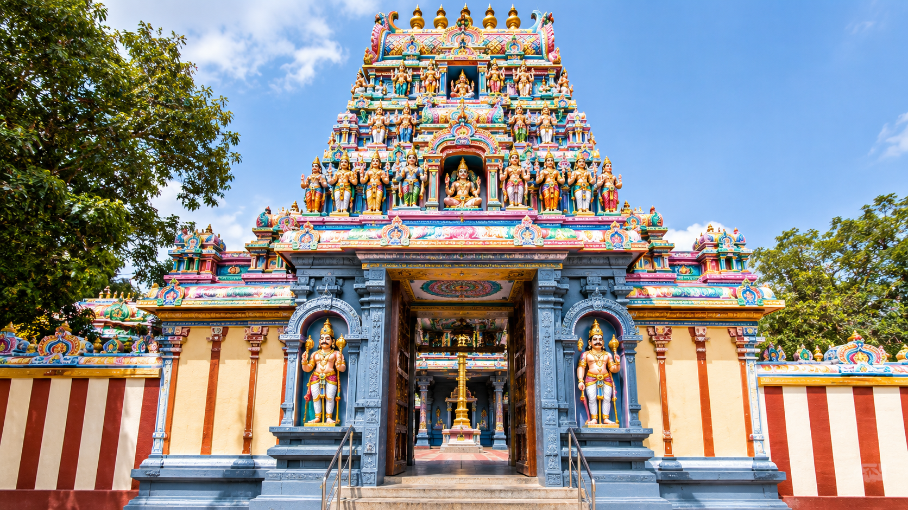
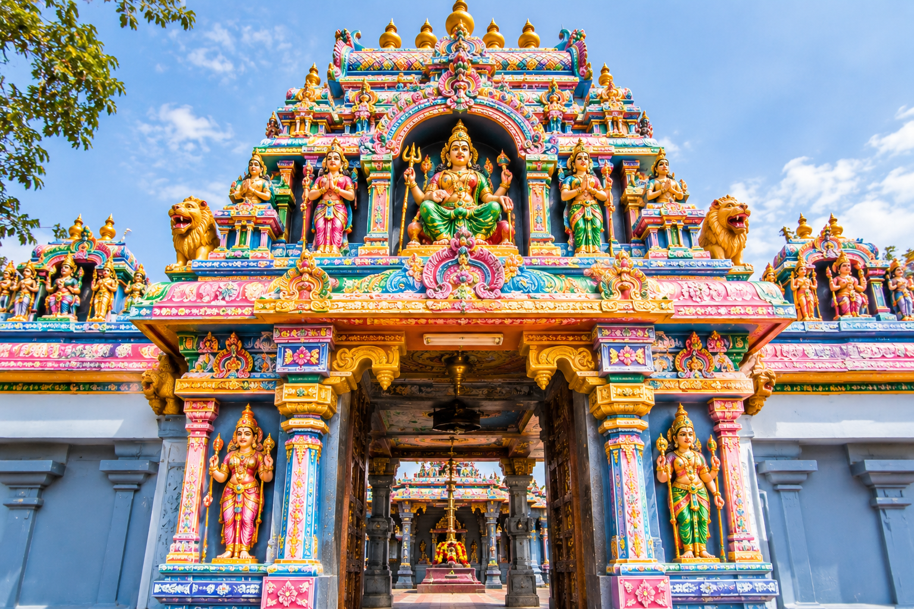
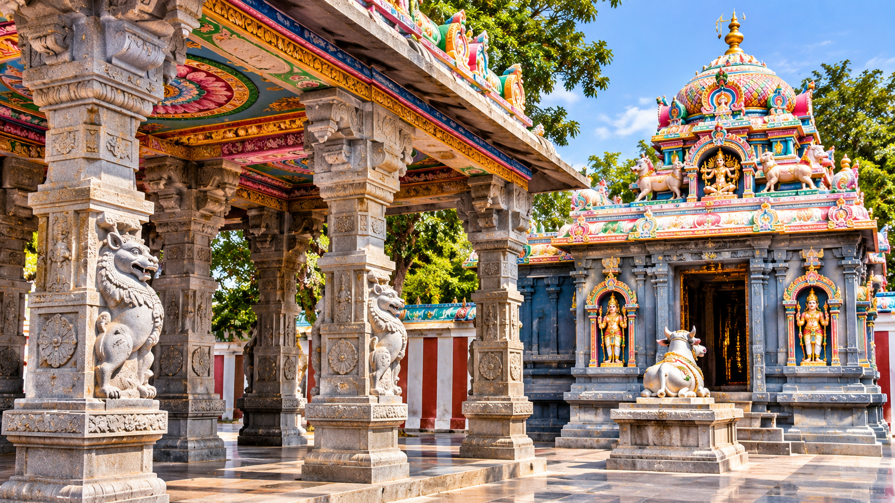
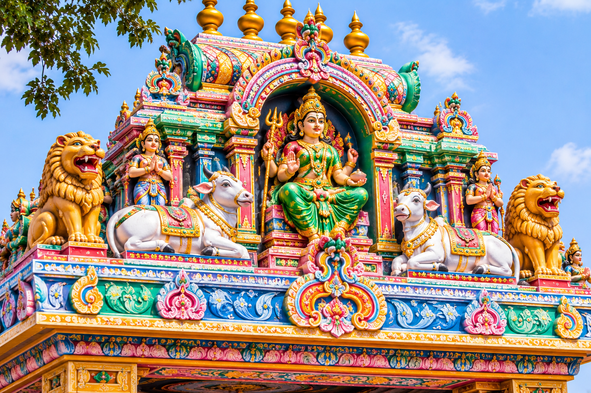

YET THE SACRED STORY OF
S R I
A Y Y A N A R
IN SACRED STONE, SILENCE TURNS TO PRAYER. OVER THREE DECADES OF SCRIPTURAL CHOZHA AGAMA ARCHITECTURE, SUDHAI SCULPTING, AND KOVIL VARNA VELAI UNDER MASTER STHAPATHIS A.K. BALAJI & A.K. THENNARASU.
LOCATION: ALL OVER INDIA & NEPAL · 100% AGAMA VIDHI COMPLIANT
RECORD OF SACRED HISTORY
IN 1994 · MASTER STHAPATHI LINEAGE
Rooted in hereditary Chozha temple architecture. Over 30 years carving sanctum sanctorums, vimana gopurams, and monumental sacred idols.
30+
YEARS CRAFT
7+
STATES & NEPAL
100%
AGAMA VIDHI
SACRED TEMPLE COMMISSIONS
LANDMARK SHRINES EXECUTED





+5 Major Temple Landmark Commissions in Tamil Nadu & Puducherry, plus active sites in Kadapa, Tirupati, MP & Nepal.